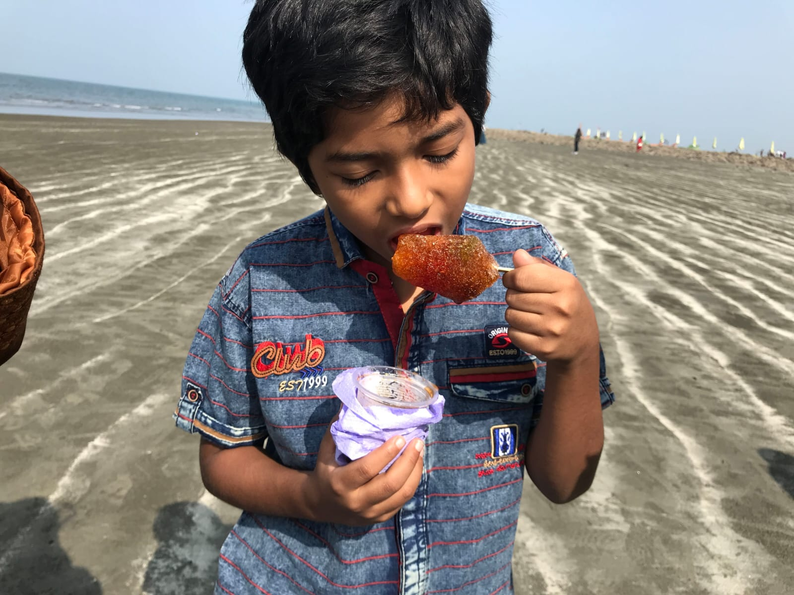
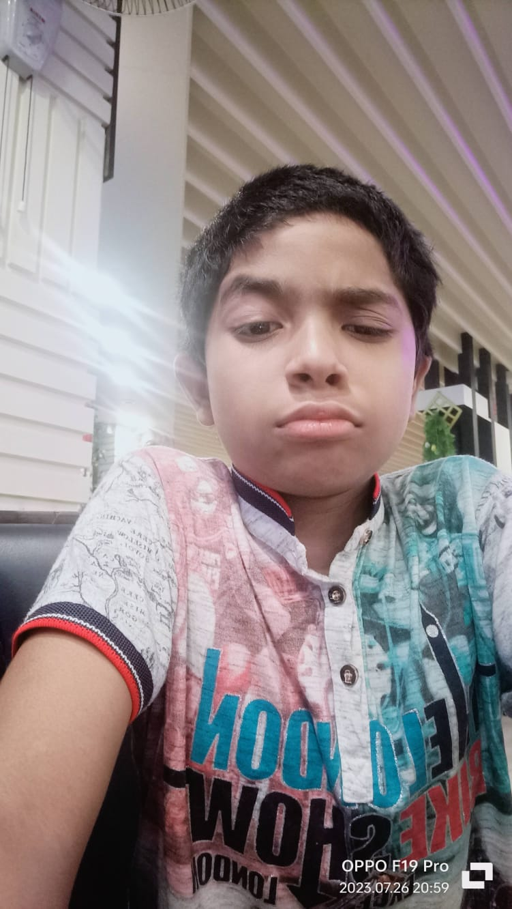
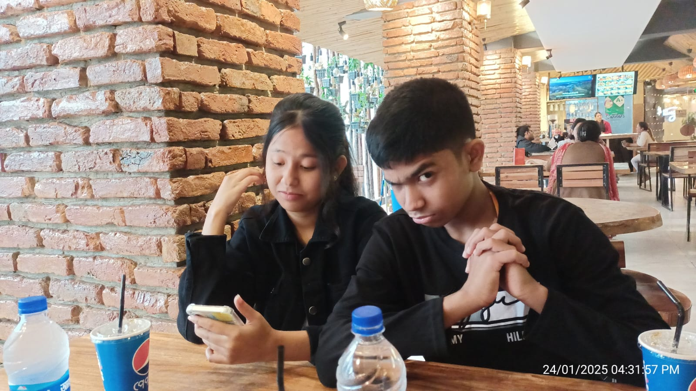
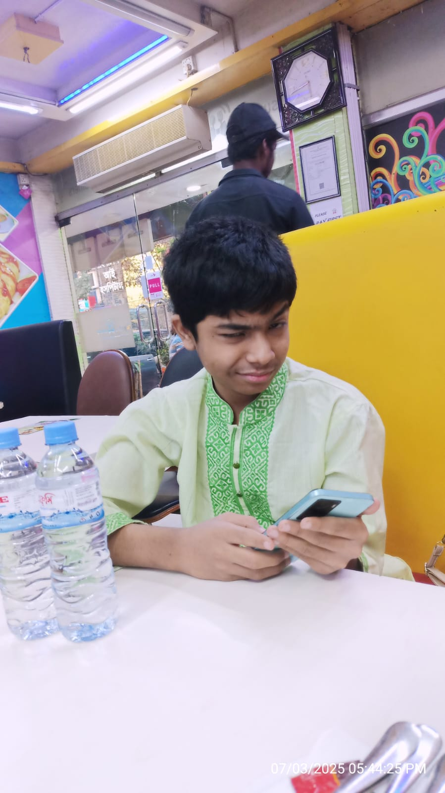
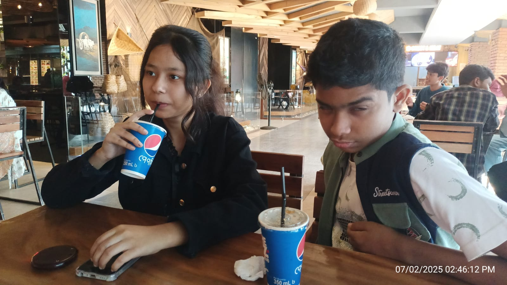
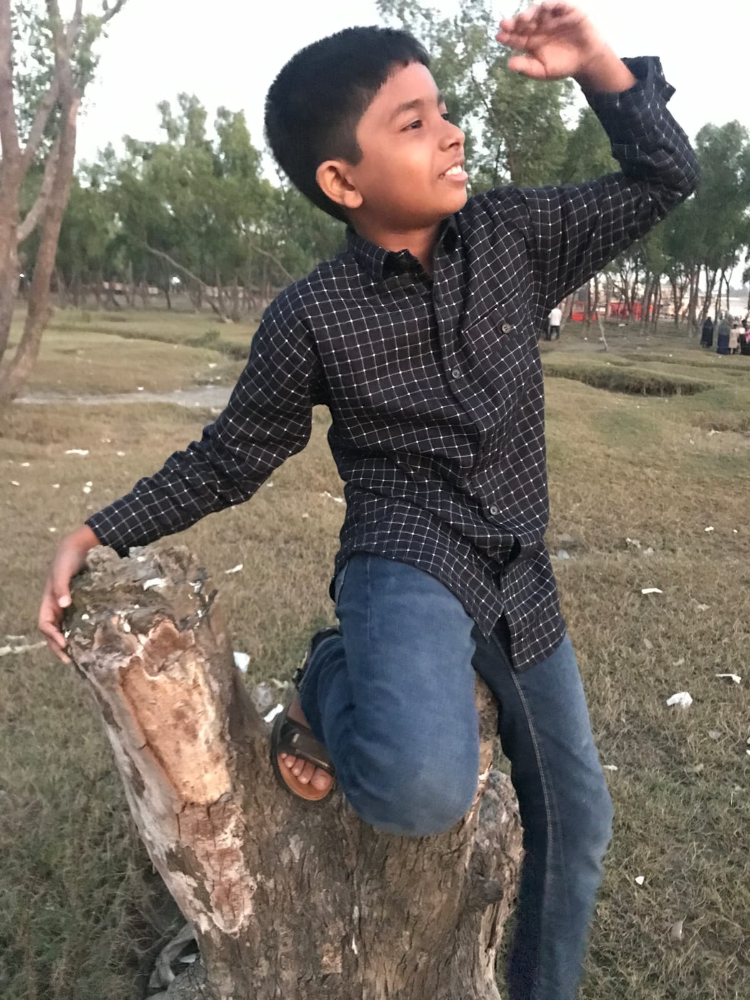

I am Muhhammad tahamid, i am a student currently studying at islamiya bank international school and college. I love exploring new things and learing about stuff. And i love coding as well as seeing how wonderful it can be when u truly understand it.


Ah bangla medium was such a head ache for me. like its just memorizing and my 2 years ago self can relate hard on that. and btw teacher if your reading this yea all my phots are a bit weird.
In my free time i love to play video games like minecraft, roblox, genshin impact, honkai star rail, wuthering waves etc. Gaming for me is a great way to relax and have fun without any stress.
When i was in Bangla medium studying was like such a pain to me but now that i am in english medium i have started to enjoy studying and learning new things. My favorite subjects have to me math and every science subject.
Space for me is such a fascinating topic. I love how vast and complex it is and learning about the planets moons starts etc is always fun to me.
In my life i dont take pictures of my self often i am mostly forced into family pictures and stuff but when i do take pictures of myself its always a bit weird cuz its funny sometimes.

Ah as it seems we go to too many resturants i mean its the only place photos of me are the most common

This day we ate alot of stuff but i forget most things so i dont know what happend there cu we went to that resturant alot of times
But looks like this photo was taken when i was younger huh hhow times have changed.

This is the same place as the first photo as i said we go there often.
This place was pretty fun but one fun fact is how this place was bought by a chistian man or something so its named saint martin bangladeshis have been pronouncing it wrong all this time it took me this log to see its english name lol.

I am pretty sure this was in chitagong this place was massive though like it was a bit lower then the ground above it so the climb was crazy